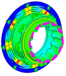
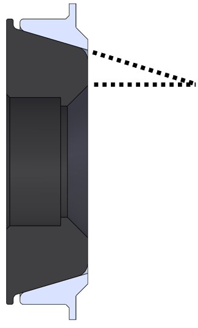
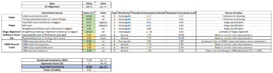
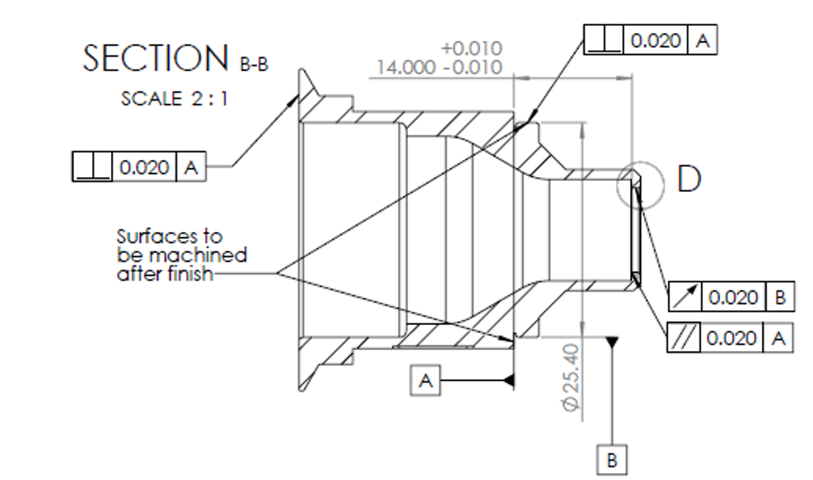
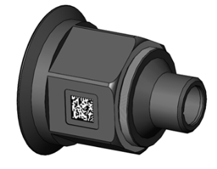

Precision Optomechanics
5-DoF Lens Focus System
Engineering Problem
- Position the lens relative to the imager precisely at the required focal distance.
- Minimize hysteresis and parasitic motion to achieve <1 μm focus-positioning repeatability.



Concept Generation and Simulation
Utilized two connected diaphragm sheet flexures to provide a total of 5 DoF. Simulated the flexure’s stiffness to quantify resistance to undesired motion.
Design Compatibility
Developed a multi-lobed, angled lens interface to transmit torque while accommodating the range of production lens geometries.
System Integration
Integrated the flexure with a motorized drivetrain, adjustable focus-target stage, and automated focusing software to reliably position the lens.
Imager Alignment Tolerance Analysis
Engineering Problem
- Develop multiple automated machines capable of aligning the imager to the lens to within ±0.15 mm.
- Validate machine performance against the alignment specification.



Tolerance Development
Identified potential sources of variation and quantified their sensitivity to the overall alignment specification.
GD&T and Calibration
Applied GD&T to critical components and documented calibration procedures with dial indicators and other metrology equipment.
Production Validation
Created a CMM program and a statistical sampling plan to verify the machine’s performance.